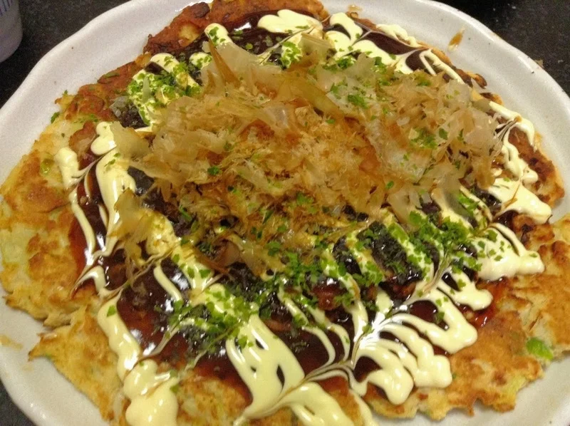
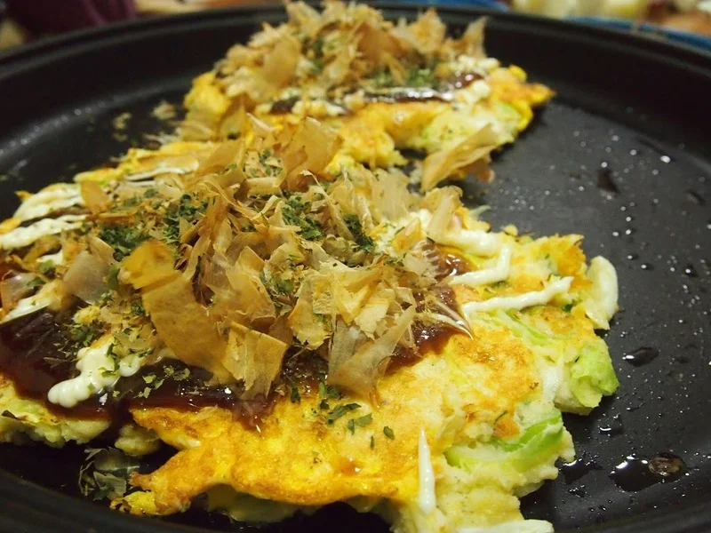

お好み焼き・うどん
卵とおからパウダーの基本のお好み焼き
おからパウダー30gと卵2個で作る、小麦粉を生地に入れないお好み焼きです。キャベツや長ネギ、豚肉などを合わせ、私はソースとマヨネーズにからし
おからパウダーに絹ごし豆腐、キャベツ、長ネギを合わせ、豚肉の代わりに油揚げとハムを使うお好み焼きです。私は肉の代わりに、ストックしていた油揚げとハムを使ったことがあります。

卵は、生地に混ぜる2個と、焼く時に1枚につき1/2個分を追加する分に分けて考えます。追加分は焼く枚数で変わるので、材料の卵2個だけでまかなえる配合ではありません。
焼く時に追加した卵も含めて、生地と卵の中心まで火が通ったか確かめます。
鰹だしの量は、元の作り方では「適宜」です。ほかのお好み焼きの水120gや150mlを、そのまま使わないでください。豆腐も入る生地なので、おからパウダーを戻した状態を見ながら混ぜます。
豚肉を買い足す前に、冷蔵庫に使えるハムや油揚げがないか見てみましょう。
元の作り方には、焼き油の指定がありません。油を使うかどうかは、使う調理器具の取り扱いに従ってください。
加熱時間は作った時の目安です。容器や調理器具によって仕上がりは変わります。中心まで火が通っていることを確認してください。
おからと豆腐のお好み焼きの材料・作り方（50kgdiet.com） →
このページは書籍の改訂原稿をもとに掲載しています。元記事は過去の記録のため、材料や表現が異なる場合があります。